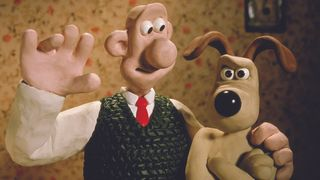
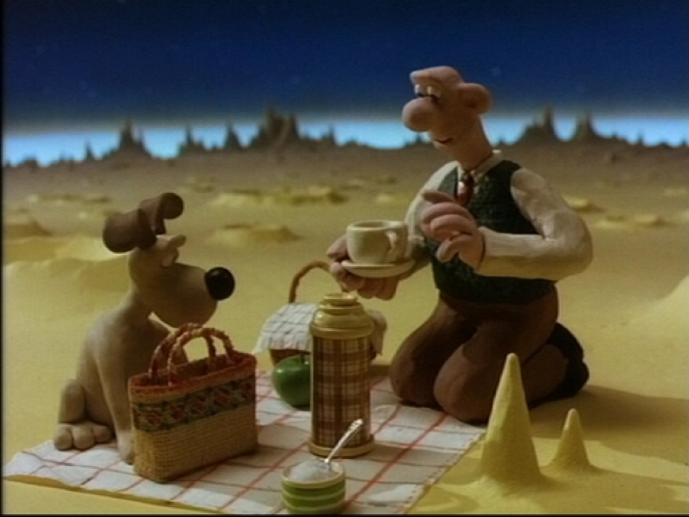

Mooie foto's van wallace and Gromit
A Grand Day Out

The curse of the Were-Rabbit.

A Grand Day Out

Nick Park met beeldje van The Wrong Trousers

The Wrong Trousers

A Grand Day Out

Ontdek meer over Wallace and Gromit door hier beneden te klikken!
terug naar home
doe de quiz!